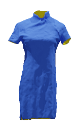
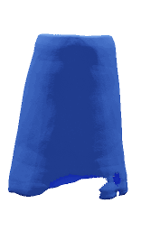

We show three groups of surface reconstruction from multi-view images. The front and back faces are rendered in blue and yellow respectively. Our method (left) is able to reconstruct high-fidelity and intricate surfaces of arbitratry topologies, including those non-watertight structures, e.g. the thin single-layer shoulder strap of the top (middle). In comparison, the state-of-the-art NeuS method (right) can only generate watertight surfaces, resulting in thick, double-layer geometries.
Abstract
Recent progress in neural implicit functions has set new state-of-the-art in reconstructing high-fidelity 3D shapes from a collection of images. However, these approaches are
limited to closed surfaces as they require the surface to be represented by a signed distance field. In this paper, we propose NeAT, a new neural rendering framework that can learn
implicit surfaces with arbitrary topologies from multi-view images. In particular, NeAT represents the 3D surface as a level set of a signed distance function (SDF) with a validity branch for estimating the surface existence probability at the query positions. We also develop a novel neural volume rendering method, which uses SDF and validity to calculate the volume opacity and avoids rendering points with low validity. NeAT supports easy field-to-mesh conversion using the
classic Marching Cubes algorithm. Extensive experiments on DTU, MGN, and Deep Fashion 3D datasets indicate that our approach is able to faithfully reconstruct both watertight and non-watertight surfaces. In particular, NeAT significantly outperforms the state-of-the-art methods in the task of open surface reconstruction both quantitatively
and qualitatively.
The outer-side and the inner-side are rendered in blue and yellow, respectively.
Input Images (64 views)
Ours
NeuralUDF
NeuS
GT
VolSDF
IDR
NeRF

Input Images (64 views)
Ours
NeuralUDF
NeuS
GT
VolSDF
IDR
NeRF
Input Images (64 views)
Ours
NeuralUDF
NeuS
GT
VolSDF
IDR
NeRF
Multiview Reconstruction on Closed Surfaces
Input Images (64 views)
Ours
NeuS
IDR
COLMAP
Single-view Reconstruction on Open Surfaces
The outer-side and the inner-side are rendered in blue and yellow, respectively.

Input Image
Ours
NeuS
DVR
Key Idea
(a) is the signed distance function (SDF); (b) is the validity probability function V; (c) is the watertight surface extracted from (a) SDF; (d) is the open surface extracted from (a) SDF and (b) validity probability. In our mesh extraction process, we set the SDF of the 3D query points with V < 0.5 to NAN and extract the open surface with the Marching Cubes algorithm.
The framework of our approach. We project a sampled pixel on the input image \(I_{gt}\) to 3D to get the sampled 3D points \(p(t)\) on a ray. Next, the SDF-Net, Validity-Net, and Color-Net take \(p(t)\) as the input to predict the signed distance \(f(p(t))\), validity probability \(V(p(t))\), and the RGB \(c(p(t))\), respectively. Then our NeAT renderer generates the color \(I_{pred}\) and the mask \(M_{pred}\) for NeAT-Net optimization. In the mesh exportation (testing) stage, we update the SDF by assigning the low-validity points with a \(NAN\) value, thus preventing the decision boundary from forming at those regions. Finally, we export arbitrary surfaces from the updated SDF with the Marching Cubes Algorithm.
@article{meng_2023_neat,
title={NeAT: Learning Neural Implicit Surfaces with Arbitrary Topologies from Multi-view Images},
author={Meng, Xiaoxu and Chen, Weikai and Yang, Bo},
journal={Proceedings of the IEEE/CVF Conference on Computer Vision and Pattern Recognition},
month={June},
year={2023}
}